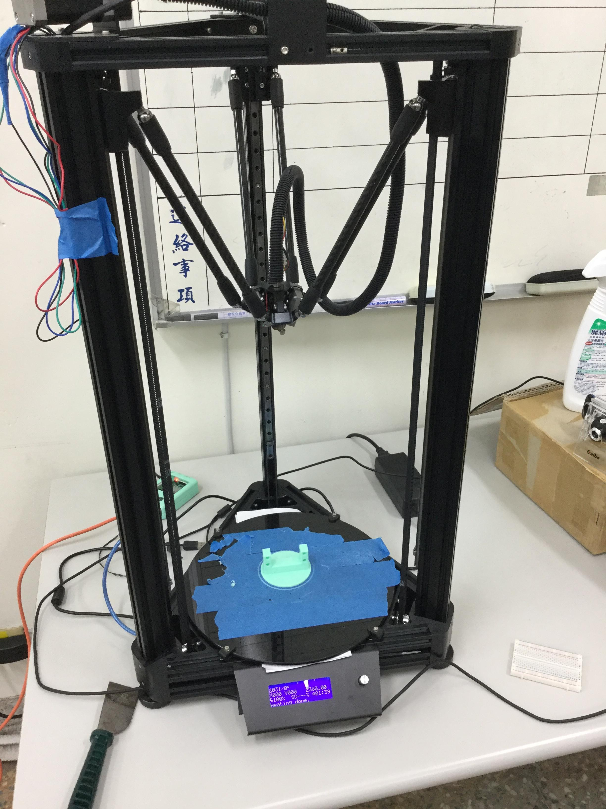
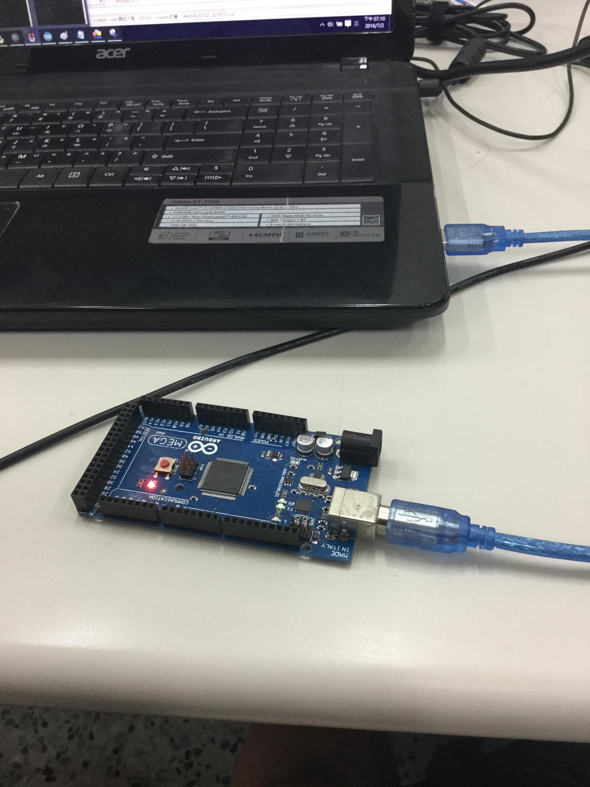
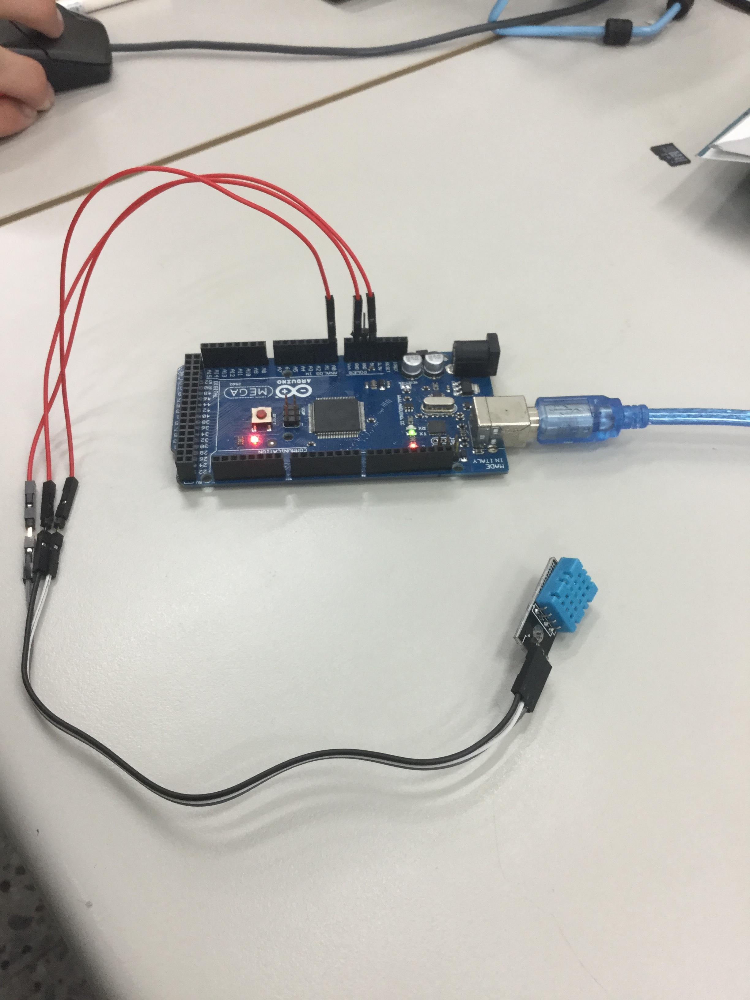
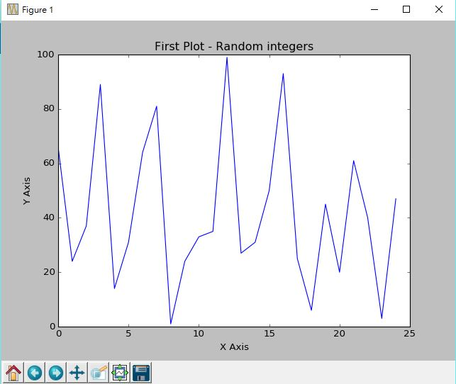
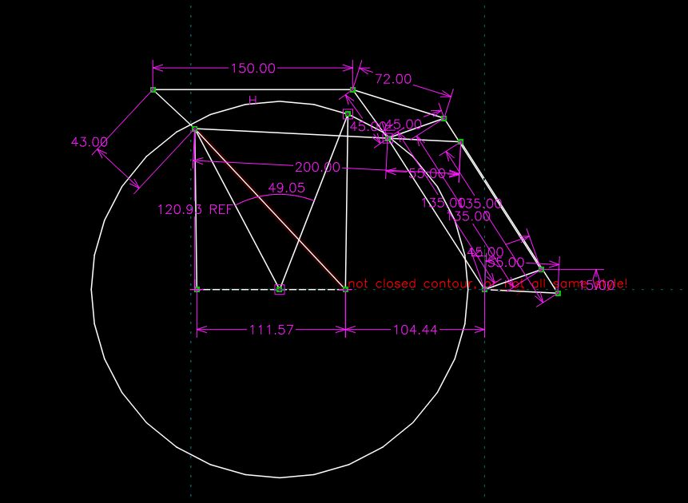
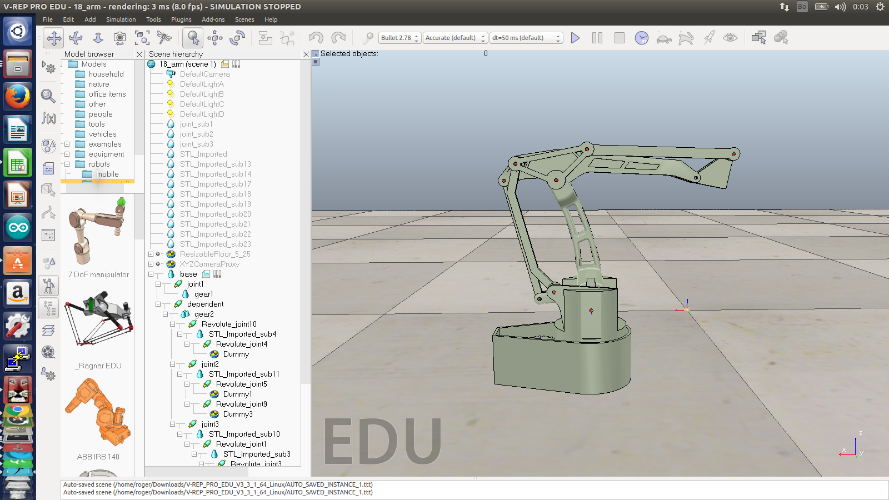
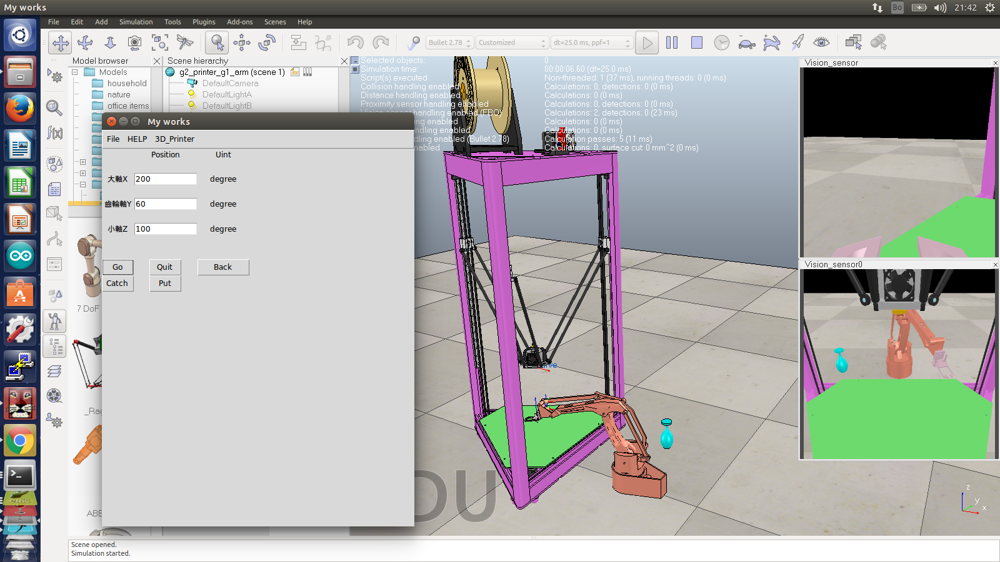
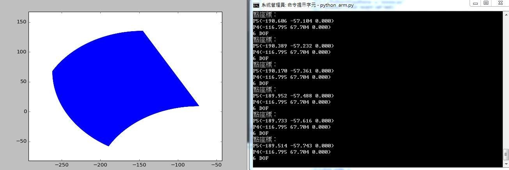
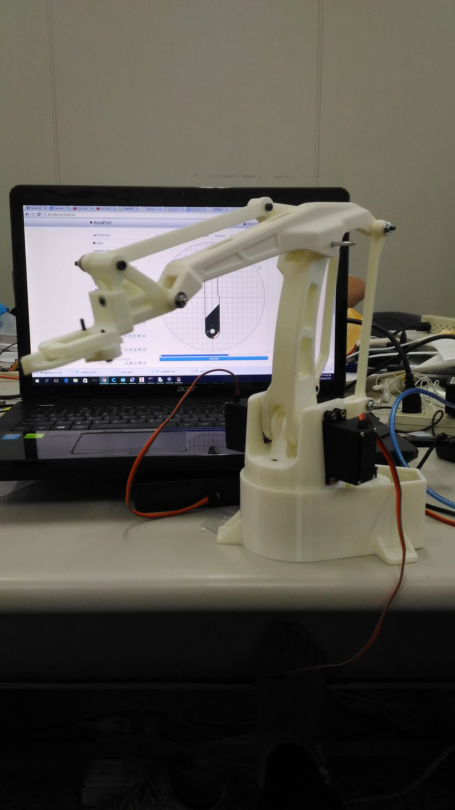
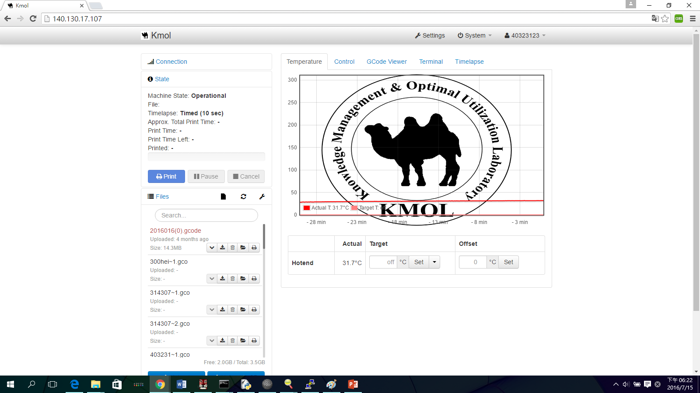

專題報告
主題:物連網與自動化
組員:林祐生 黃心柏 張元旭 陳靖廷 康明宗
目錄
研究動機
研究動機

研究目的

呈現
完成的近況

研究機器
3D列印機
簡介
在使用3D列印機時，常常會需要長久的等待，例如:製作一個大型的物件，或者有很多複雜的小零件參雜，往往需要大量的時間去製作，途中列印完成的時間點，幾乎都落在凌晨，沒辦法讓機台持續列印下去，因為工件會附著在平台上，並沒有辦法直接操控電腦讓他進行列印動作，目前需仰賴人力，將其剷除，才可繼續進行列印動作
要會控制需要
1.程式語言
2.網際網路
3.數學
python3
我們使用python3先進行串列通訊和Arduino溝通
感測資料
回傳資料
網際網路架構
1.server (Nginx)
2.framework(Flask)
Nginx
nginx在linux作業系統(例:ubuntu 14.04 raspbane)下效率相當高，以及可以大量平行運算等特點，在我們的嵌入式系統，採用Nginx當作代理伺服器

Flask
Flask為一種微型網際網路架構，微型不代表整的web都需要用同一個python文件(當然也是可以使用同一個)，也不代表他是缺乏功能，只擁有基本的網路架構，在微型framework指的是核心簡單易於擴充，一切都可以看使用者，需要怎樣的功能，就安裝不一樣的模組，可針對我們需要使用的模組做延伸，因此我們選用Flask當框架使用。

數學
1.手臂的設計
2.手臂位置的推導
3.手臂位置的模擬
手臂設計
計算需要路徑
手臂逆向推導(未完成)
V-rep模擬
V-rep模擬
V-rep模擬影片
計算可移動到的點
列印實體
撰寫控制的程式
網頁部分
Nginx
網頁的架構
